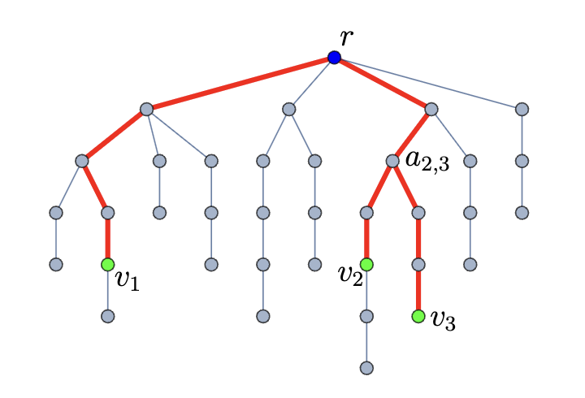

Biography
I am a PhD student at UCLA in the Department of Electrical Engineering, where I work on quantum computing and quantum sensing with a focus on superconducting and optical devices. My research is supervised by Dr. Prineha Narang. I am interested in quantum networks, quantum transduction, and quantum communication. I have previously worked at IBM and AFRL on superconducting devices for quantum communication and networks.
I completed my BSc in Electrical Engineering at ETH Zürich, where I worked on silicon nitride grating couplers for photonic integrated circuits. I also completed my MSc at UCLA in Physics, where I focused on mesoscopic optics and quantum electronics.
Monte Carlo model of distilled remote entanglement between superconducting qubits across optical channels
2025
A promising quantum computing architecture comprises modules of superconducting quantum processors linked by optical channels via quantum transducers. To map transducer device performance to system-level channel performance, our model uses Monte Carlo simulations that incorporate 2-to-1 and 3-to-1 entanglement distillation protocols. We show that the Extreme Photon Loss distillation protocol is particularly high performing and that, even without distillation, present-day transducers are at the threshold of enabling Bell pair distribution with fidelities of 50%. If the next generation of transducers can improve by 3 orders of magnitude in both added noise and efficiency, and increase repetition rates by 50x, then they would allow for remote two-qubit gates achieving 99.7% fidelities at 100 kHz rates. These results set targets for transducers to be ready for deployment into scaled superconducting quantum computers.
Efficient Multiparty Entanglement Distribution with DODAG-X Protocol
2024
In this work we introduce the DODAG-X protocol for multipartite entanglement distribution in quantum networks. Leveraging the power of Destination Oriented Directed Acyclic Graphs (DODAGs), our protocol optimizes resource consumption and enhances robustness to noise in dynamic and lossy networks. Implementing a variation on the X-protocol within the DODAG, we minimize graph verification and path-finding calculations, significantly reducing computational overhead when compared to other entanglement routing schemes. Additionally, our benchmarks on grid lattice and small-world topologies reveal substantial measurement reduction compared to existing protocols. We demonstrate the success of DODAG-X for generating maximal three-party entanglement in arbitrary networks, and describe the potential for scaling to generic n-party entanglement. The DODAG-X protocol provides a scalable and efficient solution for entanglement routing, advancing current techniques for reliable quantum communication and network applications.
Design of an Efficient Silicon Nitride Grating Coupler
2022
This project was conducted as part of my Bachelor Thesis at ETH Zurich during my last semester at the Institute of Electromagnetic Fields under the supervision of Prof. Juerg Leuthold, Manuel Kohli and Boris Vukovic. The project consisted of exploring the potential uses of silicon nitride as an alternative platform for photonic integrated circuits as it shows tremendous promise due to low propagation losses, CMOS compatibility, and ability to handle high input power, among others. The first fundamental challenge was to understand the coupling from optical fibers to the nano- and microscale photonic waveguides. The thesis concentrated on the interface between fibers and integrated circuits so called couplers, specifically grating couplers, and on how to make them more efficient. In this work, a silicon nitride based grating coupler was demonstrated with a coupling efficiency below 0.5 dB using a back reflector. Using amorphous silicon as overlay gratings, a 1-dB Bandwidth of 40 nm is achieved. The development of efficient coupling at the interface was and remains a vital step to harness the full potential of photonic integrated circuits.
Science and Engineering Fair Project

2018
Science and Engineering Fair project during my high school years with Christina Henzinger. We built headphones capable of generating electricity from temperature differences of environment and body using Peltier effect. Won Science Fair in 2018 in Vienna.